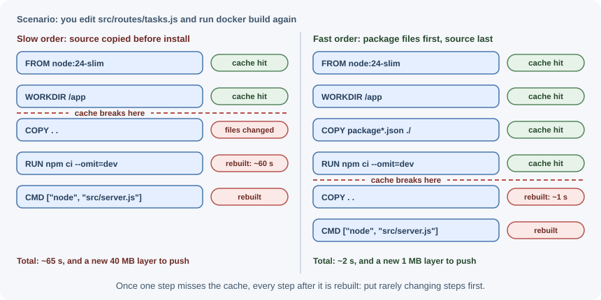
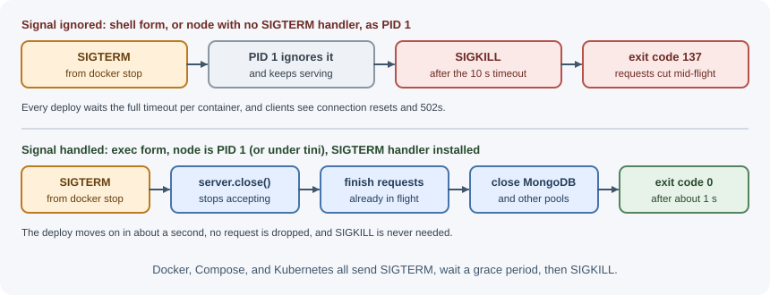

Writing Production Dockerfiles¶
A Dockerfile is a recipe: each instruction runs in order and records its result as an image layer or as image metadata. Writing one that merely works takes five lines. Writing one that builds in seconds, produces a small image, runs as an unprivileged user, shuts down cleanly, reports its health, and never leaks a secret takes understanding how the build cache, stages, and the container's PID 1 behave.
This lesson walks through every common instruction, the build context and
.dockerignore, the cache rules that decide build speed, multi-stage
builds for the TaskFlow API (Node.js) and TaskFlow Web (a Vite build
served by nginx), exec and shell forms, ENTRYPOINT and CMD, signal
handling and graceful shutdown, health checks, build arguments, and the
BuildKit features that keep secrets out of images.
Why it matters¶
The Dockerfile decides properties you cannot fix later at runtime:
- Build speed. A badly ordered Dockerfile reinstalls every dependency on each one-line code change. Ten developers and a CI pipeline turn that into hours of waiting per day.
- Image size. Every megabyte is pulled by every node on every deploy and every scale-out. A 1.3 GB image can add tens of seconds to an autoscaling event that a 250 MB image would not.
- Security. Compilers, package managers, shells, and a root user in the final image are tools an attacker can use. Secrets copied into any layer can be extracted by anyone who can pull the image.
- Reliability. A process that ignores
SIGTERMis killed mid-request on every deploy. A missing health check lets a hung process keep receiving traffic.
Real-world usage¶
- Docker. The official
Building best practices
guide recommends multi-stage builds, a
.dockerignorefile, pinned base images, ordering instructions for the cache, and one concern per container: the same rules this page applies to the TaskFlow images. - The Node.js Docker team. The
docker-node best practices
document, maintained with the official Node.js images, recommends
setting
NODE_ENV=production, running as the built-innodeuser, using--initor handling signals because Node is not designed to run as PID 1, and callingnodedirectly instead ofnpm start. - Google Cloud. The architecture guide Best practices for building containers explains PID 1 signal handling and zombie reaping, building the smallest image possible, and making the most of the build cache.
- Snyk. The article
10 best practices to containerize Node.js web applications with Docker
walks through deterministic installs with
npm ci, least-privilege users, graceful shutdown, multi-stage builds, and keeping secrets out of images, applied to a Node.js service.
Popular tools and providers: Docker BuildKit and docker buildx,
Hadolint (a Dockerfile linter), dive (an image layer explorer), Docker
Scout, docker init (generates starter files), Buildah, and Cloud Native
Buildpacks (Paketo) as an alternative to writing Dockerfiles.
How it works¶
The instructions¶
Start every Dockerfile with the parser directive
# syntax=docker/dockerfile:1. It tells BuildKit to use the latest stable
1.x Dockerfile frontend, which enables features such as cache and secret
mounts regardless of the Docker version installed.
| Instruction | What it does | Layer or metadata |
|---|---|---|
FROM image AS name |
Starts a stage from a base image | Base layers |
ARG NAME=default |
Declares a build-time variable | Metadata (build only) |
ENV NAME=value |
Sets an environment variable for later steps and at runtime | Metadata |
WORKDIR /app |
Sets (and creates) the working directory | Metadata (may create a small layer) |
COPY src dst |
Copies files from the build context or another stage (--from) |
Layer |
ADD src dst |
Like COPY, but also fetches URLs and Git repositories and unpacks local tar archives |
Layer |
RUN command |
Runs a command at build time | Layer |
USER node |
Sets the user for later RUN steps and for the container |
Metadata |
EXPOSE 3000 |
Documents the port the app listens on; publishes nothing | Metadata |
ENTRYPOINT [...] |
The executable the container always runs | Metadata |
CMD [...] |
Default arguments (or the default command) | Metadata |
HEALTHCHECK CMD ... |
A command Docker runs periodically to test health | Metadata |
LABEL key=value |
Adds metadata, such as the source repository | Metadata |
VOLUME /data |
Declares a mount point that gets an anonymous volume by default | Metadata |
STOPSIGNAL SIGQUIT |
Changes the signal docker stop sends |
Metadata |
SHELL ["bash", "-c"] |
Changes the shell used by shell-form instructions | Metadata |
ONBUILD ... |
Defers an instruction to images built from this one | Metadata (rarely used) |
Prefer COPY over ADD: its behaviour is explicit, and ADD's automatic
extraction and remote downloads can surprise you. Avoid VOLUME in
application images: it creates anonymous volumes nobody manages.
The build context and .dockerignore¶
docker build . sends the build context, the directory given as the
last argument, to BuildKit. COPY . . can only copy files from it, and
every file in it can affect the cache. Without a .dockerignore, the
context includes:
- the host's
node_modules, possibly compiled for another OS or CPU, which then overwrites the clean install inside the image; .git, which can be hundreds of megabytes and changes on every commit, breaking the cache forCOPY . .;.envfiles and local credentials, which end up inside an image layer.
A .dockerignore uses the same pattern syntax as .gitignore (*, **,
! to re-include). Keep it next to the Dockerfile and treat it as part of
the build definition.
The layer cache¶
BuildKit stores the result of every step and reuses it on the next build when nothing that step depends on has changed:
- A step is reused only if its parent layer was reused and the instruction text is identical.
- For
COPYandADD, the content checksums of the copied files must also match (modification times are ignored). - For
RUN, only the command string is compared.RUN apt-get updatestays cached for months even though the package mirrors moved on; rebuild with--pull --no-cacheon a schedule to pick up patches. - Once one step misses the cache, every later step is rebuilt, even if its own inputs did not change.
The practical rule: order steps from least to most frequently changing. Copy the dependency manifests, install, and only then copy the source.

Worked example: the TaskFlow API team builds 40 times a day, and 5 of
those builds change package-lock.json. With the slow order every build
reinstalls dependencies: 40 × 65 s ≈ 43 minutes. With the fast order only
the 5 lockfile changes reinstall: 5 × 65 s + 35 × 2 s ≈ 6.6 minutes. The
registry also stores and transfers a 1 MB layer instead of a 40 MB layer
for most builds.
CI runners start with an empty cache. Export the cache to a registry or the CI provider's cache so CI gets the same benefit (see images, registries, and tagging).
Multi-stage builds¶
A multi-stage build has several FROM instructions. Each starts a new
stage, and later stages copy only what they need from earlier ones with
COPY --from=<stage>. Everything else (dev dependencies, compilers,
source files, caches) stays behind and never reaches the final image.
![Diagram: the build stage runs npm ci with dev dependencies and npm run build to produce /app/dist; the deps stage runs npm ci --omit=dev to produce production-only node_modules; the runtime stage starts from node:24-slim and copies dist from build and node_modules from deps, then sets NODE_ENV=production, USER node, and CMD node dist/server.js; dev dependencies, TypeScript sources, tests, build tools, and the npm cache are left behind; approximate sizes are about 1.3 GB for a single stage on node:24 versus about 250 MB for the multi-stage runtime.](../multi-stage-build-flow.svg)
Useful properties of stages:
- BuildKit builds only the stages the target needs and runs independent
stages in parallel (here,
depsandbuild). docker build --target build .stops at a named stage, which CI can use to run tests in the build environment.- The last stage is the default target, so put the runtime stage last.
- A stage can start
FROManother stage (FROM base AS deps) to share common settings.
Running as a non-root user¶
Containers run as root unless the image says otherwise. The official Node
images include a node user (UID 1000), and USER node switches to it
for later RUN instructions and for the running container. Two details
matter:
- Files copied with
COPYare owned by root by default. That is good for application code: thenodeuser can read it but not modify it, so a compromised process cannot rewrite the app. UseCOPY --chown=node:nodeor aRUN mkdir ... && chownonly for directories the app must write. - Unprivileged users cannot bind ports below 1024 without extra capabilities. Listen on 3000 or 8080 inside the container and map the port when publishing it.
Exec form compared with shell form¶
CMD, ENTRYPOINT, and RUN accept two syntaxes:
Exec form: CMD ["node", "dist/server.js"] |
Shell form: CMD node dist/server.js |
|
|---|---|---|
| What actually runs | node directly |
/bin/sh -c "node dist/server.js" |
| PID 1 | node |
The shell (Docker's docs warn the app will not receive signals) |
Signals from docker stop |
Delivered to node |
Delivered to the shell, which usually does not forward them |
Variable expansion ($PORT) |
None: passed literally | Yes, by the shell |
| Needs a shell in the image | No (works in distroless images) | Yes |
Use the exec form for CMD and ENTRYPOINT. If you need variable
expansion, use a small entrypoint script that ends with exec "$@" so the
app replaces the shell as PID 1. Shell form is fine for RUN.
ENTRYPOINT compared with CMD¶
ENTRYPOINT is the executable; CMD provides default arguments that
docker run <image> <args> replaces.
ENTRYPOINT |
CMD |
Process started |
|---|---|---|
| (none) | ["node", "dist/server.js"] |
node dist/server.js; docker run img node -v runs node -v instead |
["node"] |
["dist/server.js"] |
node dist/server.js; docker run img dist/migrate.js runs node dist/migrate.js |
["/usr/bin/tini", "--"] |
["node", "dist/server.js"] |
tini -- node dist/server.js |
["docker-entrypoint.sh"] |
["node", "dist/server.js"] |
The script runs, then exec "$@" starts node as PID 1 |
| Shell form | anything | The shell-form entry point ignores CMD and run arguments |
The official Node images set ENTRYPOINT ["docker-entrypoint.sh"],
a script that ends in exec "$@", so a CMD ["node", ...] still ends up
with node as PID 1. If you replace ENTRYPOINT, keep that property.
PID 1, signals, and graceful shutdown¶
The first process in a PID namespace is special. The kernel does not apply
default signal actions to it: a signal that PID 1 has no handler for is
simply ignored. PID 1 is also expected to reap orphaned child processes
(zombies). Node.js installs no SIGTERM handler by default, so node as
PID 1 ignores docker stop, and Docker sends SIGKILL 10 seconds later.

Three fixes, usually combined:
- Exec form, so the signal reaches
nodeand not a shell. Runnodedirectly rather thannpm start: npm adds a process in between, and its signal forwarding has varied between versions. - A
SIGTERMhandler in the app that stops accepting connections, lets in-flight requests finish, closes database pools, and exits. - A tiny init process as PID 1 that forwards signals and reaps
zombies:
docker run --init(Docker's bundledtini),init: truein Compose, ortiniinstalled in the image when the platform has no--initoption (Kubernetes does not).
docker stop waits 10 seconds by default (--timeout or
stop_grace_period in Compose); Kubernetes waits
terminationGracePeriodSeconds, 30 seconds by default. The app's own
shutdown timeout must be shorter than the platform's.
Health checks¶
HEALTHCHECK tells Docker how to test whether the container is working.
Docker runs the command inside the container on a schedule and records
the status as starting, healthy, or unhealthy.
| Option | Default | Meaning |
|---|---|---|
--interval |
30s | Time between checks |
--timeout |
30s | A check taking longer counts as a failure |
--start-period |
0s | Grace period while the app boots; failures do not count |
--start-interval |
5s | Check interval during the start period (Docker Engine 25+) |
--retries |
3 | Consecutive failures before unhealthy |
Docker Engine itself does not restart an unhealthy container. The
status is used by Docker Swarm, by Compose's
depends_on: condition: service_healthy, and by monitoring. Kubernetes
ignores HEALTHCHECK entirely and uses its own probes (see
health probes and rolling updates).
Slim and distroless images usually have no curl, so use the runtime you
already ship: Node 18 and later have a global fetch.
ARG compared with ENV¶
ARG |
ENV |
|
|---|---|---|
| Available during the build | Yes, in the stage that declares it | Yes |
| Present in the running container | No | Yes |
| Set from the command line | docker build --build-arg NAME=value |
Only by changing the Dockerfile |
| Override at runtime | Not applicable | docker run -e NAME=value |
| Scope | Ends at the stage; an ARG before the first FROM is usable only in FROM lines unless redeclared |
Inherited by later stages built FROM this one |
| Safe for secrets | No: values can appear in docker history and provenance metadata |
No: visible to anyone with the image |
Use ARG for build-time choices (a Node version, a public API URL baked
into a frontend bundle) and ENV for runtime defaults. Use neither for
secrets; use secret mounts.
BuildKit features worth using¶
BuildKit has been the default builder since Docker Engine 23. With the
# syntax=docker/dockerfile:1 line you can use:
- Cache mounts:
RUN --mount=type=cache,target=/root/.npm npm cikeeps npm's download cache between builds without putting it in a layer, so a lockfile change re-downloads only the changed packages. - Secret mounts:
RUN --mount=type=secret,id=npmrc,target=/root/.npmrcmakes a file available to oneRUNstep only. It is never written to a layer or the image history. - SSH mounts:
RUN --mount=type=sshforwards the host's SSH agent for cloning private repositories. - Heredocs:
RUN <<EOFfollowed by several lines andEOFwrites multi-line scripts without&& \chains. COPY --link: creates a layer that does not depend on the layers below it, so changing the base image does not invalidate it.- Build checks:
docker build --check .runs Dockerfile lint rules without building.
Base images and image size¶
Sizes below are approximate, uncompressed, for linux/amd64, and change
with every release. Measure your own with docker image ls.
| Base image | Approximate size | What is inside | Typical use |
|---|---|---|---|
node:24 |
~1.1 GB | Debian with compilers, Python, Git, and Node | Build stage for native modules |
node:24-slim |
~200-250 MB | Minimal Debian and Node | Default runtime for Node services |
node:24-alpine |
~150-170 MB | Alpine (musl libc) and Node | Smaller images when musl is fine |
gcr.io/distroless/nodejs24-debian13 |
~150-200 MB | Node and glibc; no shell or package manager | Smallest attack surface |
nginx:1.30 |
~190 MB | Debian and nginx | Rarely needed for static files |
nginx:1.30-alpine |
~50 MB | Alpine and nginx | Serving a built frontend |
The Node.js binary alone is on the order of 100 MB, so a Node image will
not get much smaller than that whatever the base. Alpine's musl libc
behaves differently from glibc for some native modules and DNS
resolution, and the Node.js project treats musl builds as an experimental
platform. Choose -slim by default and Alpine or distroless when you have
tested them.
When to use and when not to use¶
| Situation | Recommendation |
|---|---|
| Any service you deploy | Multi-stage build, slim base, non-root user, exec-form CMD |
| Plain JavaScript with no native modules | Two stages: production deps and runtime |
| TypeScript or a bundler | Three stages: deps, build, runtime |
Native modules (bcrypt, sharp) |
Build on the same libc as the runtime (glibc to glibc) |
| A static frontend | Build with Node, serve the output with nginx or a CDN |
| Many similar services | A shared internal base image, or Cloud Native Buildpacks |
| Highest security requirements | Distroless or hardened base images, pinned by digest |
Do not use a single-stage image built FROM node:24 with dev
dependencies for production, and do not hand-tune Dockerfiles for dozens
of near-identical services when a buildpack or shared base would give the
same result with less maintenance.
Practical examples¶
.dockerignore for the TaskFlow API¶
# .dockerignore
node_modules
dist
coverage
npm-debug.log*
.git
.github
.vscode
.env
.env.*
!.env.example
Dockerfile*
compose*.yaml
*.md
node_modules and dist are rebuilt inside the image, .git would
break the cache on every commit, and .env files must never reach a
layer. Ignoring the Dockerfile and Compose files keeps edits to them from
invalidating COPY . ..
Production Dockerfile for the TaskFlow API¶
# syntax=docker/dockerfile:1
# Dockerfile: TaskFlow API (Express + MongoDB, TypeScript)
ARG NODE_VERSION=24
# ---- base: settings shared by every stage ----
FROM node:${NODE_VERSION}-slim AS base
WORKDIR /app
# ---- deps: production dependencies only ----
FROM base AS deps
COPY package.json package-lock.json ./
RUN --mount=type=cache,target=/root/.npm \
npm ci --omit=dev
# ---- build: all dependencies, then compile ----
FROM base AS build
COPY package.json package-lock.json ./
RUN --mount=type=cache,target=/root/.npm \
npm ci
COPY tsconfig.json ./
COPY src ./src
RUN npm run build
# ---- runtime: the image that ships ----
FROM base AS runtime
ENV NODE_ENV=production
COPY --from=deps /app/node_modules ./node_modules
COPY --from=build /app/dist ./dist
COPY package.json ./
USER node
EXPOSE 3000
HEALTHCHECK --interval=30s --timeout=3s --start-period=20s --retries=3 \
CMD ["node", "-e", "fetch('http://127.0.0.1:3000/healthz').then(r => process.exit(r.ok ? 0 : 1)).catch(() => process.exit(1))"]
CMD ["node", "dist/server.js"]
How the parts fit together:
ARG NODE_VERSIONbefore the firstFROMlets CI test a new Node major with--build-arg NODE_VERSION=26without editing the file.NODE_ENV=productionis set only in the runtime stage. Setting it inbasewould make the build stage'snpm ciskip dev dependencies, because npm omits them whenNODE_ENVisproduction, and the TypeScript compiler would be missing.- The cache mounts keep npm's download cache between builds without adding it to any layer.
- The application files stay owned by root; the process runs as
nodeand can read but not change them. - The health check uses Node's built-in
fetch, so the image needs nocurl. - For plain JavaScript, delete the
buildstage and replace thedistcopy withCOPY src ./srcandCMD ["node", "src/server.js"].
docker build -t taskflow-api:dev .
docker build --target build -t taskflow-api:build . # stop at the build stage
docker image ls taskflow-api # compare sizes
docker history taskflow-api:dev # inspect the layers
# On Linux, also pass --add-host=host.docker.internal:host-gateway
docker run -d --name api -p 3000:3000 \
-e MONGODB_URI="mongodb://host.docker.internal:27017/taskflow" \
taskflow-api:dev
docker inspect --format '{{.State.Health.Status}}' api # starting, then healthy
Graceful shutdown in the API¶
// src/server.ts
import express from "express";
import mongoose from "mongoose";
const app = express();
let shuttingDown = false;
// Liveness: the process is up and its event loop responds
app.get("/healthz", (_req, res) => {
res.status(200).send("ok");
});
// Readiness: only take traffic while connected and not shutting down
app.get("/readyz", (_req, res) => {
const ready = !shuttingDown && mongoose.connection.readyState === 1;
res.status(ready ? 200 : 503).send(ready ? "ready" : "not ready");
});
// app.use("/tasks", tasksRouter);
async function main(): Promise<void> {
await mongoose.connect(process.env.MONGODB_URI ?? "mongodb://localhost:27017/taskflow");
const port = Number(process.env.PORT ?? 3000);
const server = app.listen(port, () => console.log(`TaskFlow API listening on ${port}`));
const shutdown = (signal: NodeJS.Signals): void => {
if (shuttingDown) return;
shuttingDown = true;
console.log(`${signal} received, shutting down`);
// Give up before the platform's SIGKILL (Docker waits 10 s by default)
const timer = setTimeout(() => {
console.error("Graceful shutdown timed out");
process.exit(1);
}, 8_000);
timer.unref();
// Stop accepting connections; requests in flight still complete.
// Since Node 19, close() also closes idle keep-alive connections.
server.close(async (err) => {
await mongoose.disconnect();
process.exit(err ? 1 : 0);
});
};
process.on("SIGTERM", shutdown);
process.on("SIGINT", shutdown);
}
main().catch((err) => {
console.error(err);
process.exit(1);
});
server.close() stops new connections at once, and its callback runs when
the last open connection has finished. The timer guarantees an exit with a
clear log line if something hangs. The /readyz endpoint is used later by
Kubernetes readiness probes.
TaskFlow Web: a Vite build served by nginx¶
# syntax=docker/dockerfile:1
# Dockerfile: TaskFlow Web (React + Vite, served by nginx)
FROM node:24-slim AS build
WORKDIR /app
COPY package.json package-lock.json ./
RUN --mount=type=cache,target=/root/.npm \
npm ci
COPY . .
# Vite inlines VITE_* variables into the bundle at build time.
# ARG values are visible to RUN steps as environment variables.
ARG VITE_API_URL=https://api.example.com
RUN npm run build
FROM nginx:1.30-alpine AS runtime
COPY nginx.conf /etc/nginx/conf.d/default.conf
COPY --from=build /app/dist /usr/share/nginx/html
EXPOSE 80
HEALTHCHECK --interval=30s --timeout=3s \
CMD wget -q -O /dev/null http://127.0.0.1/ || exit 1
# nginx.conf: single-page app hosting for TaskFlow Web
server {
listen 80;
server_name _;
root /usr/share/nginx/html;
index index.html;
# Hashed build assets never change: cache them for a year
location /assets/ {
add_header Cache-Control "public, max-age=31536000, immutable";
try_files $uri =404;
}
# Everything else is the app shell: revalidate on every visit,
# and send unknown paths to index.html for client-side routing
location / {
add_header Cache-Control "no-cache";
try_files $uri $uri/ /index.html;
}
}
The final image contains nginx and the static files only: no Node, no
node_modules, no source. Because VITE_API_URL is compiled into the
JavaScript, one image works for one API URL; building per environment or
loading configuration at runtime is discussed in
build-time vs runtime configuration.
The base nginx image runs its worker processes as the nginx user but
the master as root; the nginxinc/nginx-unprivileged images run entirely
as a non-root user and listen on port 8080.
Installing from a private registry with a secret mount¶
# .npmrc (on the build machine or CI runner; never committed or copied)
@example:registry=https://npm.example.com/
//npm.example.com/:_authToken=<token>
# syntax=docker/dockerfile:1
# Dockerfile (deps stage): private packages without leaking the token
FROM node:24-slim AS deps
WORKDIR /app
COPY package.json package-lock.json ./
RUN --mount=type=secret,id=npmrc,target=/root/.npmrc \
--mount=type=cache,target=/root/.npm \
npm ci --omit=dev
docker build --secret id=npmrc,src=$HOME/.npmrc -t taskflow-api:dev .
docker history --no-trunc taskflow-api:dev | grep -c _authToken # 0
The .npmrc exists only while that one RUN executes. Compare this with
COPY .npmrc . followed by RUN rm .npmrc, which leaves the token in the
earlier layer forever (see container security).
Adding tini when the platform has no --init¶
# Dockerfile (runtime stage excerpt): tini as PID 1
FROM base AS runtime
RUN apt-get update \
&& apt-get install -y --no-install-recommends tini \
&& rm -rf /var/lib/apt/lists/*
ENV NODE_ENV=production
COPY --from=deps /app/node_modules ./node_modules
COPY --from=build /app/dist ./dist
USER node
ENTRYPOINT ["/usr/bin/tini", "--"]
CMD ["node", "dist/server.js"]
tini forwards SIGTERM to node and reaps zombie processes. You still
need the SIGTERM handler in the app to shut down gracefully; tini
only makes sure the signal arrives.
Linting and inspecting¶
docker build --check . # BuildKit lint rules
docker run --rm -i hadolint/hadolint < Dockerfile # Hadolint rules
dive taskflow-api:dev # browse layers and wasted space
docker run --rm taskflow-api:dev id # uid=1000(node) gid=1000(node)
Best practices¶
- Start with
# syntax=docker/dockerfile:1and a.dockerignore. - Copy dependency manifests, install, then copy the source.
- Use multi-stage builds; ship only runtime files.
- Use
npm ci --omit=devfor production dependencies; nevernpm installin an image build. - Pin the base image to at least a major version and a variant
(
node:24-slim), and to a digest for full reproducibility. - Run as a non-root user and keep application files read-only to it.
- Use the exec form for
CMDandENTRYPOINT, runnodedirectly, and handleSIGTERMin the app. - Add a
HEALTHCHECKthat uses tools already in the image. - Keep secrets out of
ARG,ENV, andCOPY; use secret mounts. - Combine download, use, and cleanup in one
RUN(apt-get update, install,rm -rf /var/lib/apt/lists/*). - Rebuild regularly with
--pullso base image patches reach production. - Lint Dockerfiles in CI.
In production¶
- Every build reinstalls all dependencies.
Detect: CI build logs show
npm cirunning for a minute on commits that only change source files, anddocker buildoutput lacksCACHEDfor that step. Cause:COPY . .beforenpm ci, a missing.dockerignore(so.gitchanges every build), or no cache import in CI. Fix: reorder the steps, add.dockerignore, and export the build cache to the registry or CI cache. - Deploys take 10 extra seconds per container and drop requests.
Detect:
docker stopalways takes the full timeout, and the stopped container shows exit code 137. Cause: PID 1 is a shell (shell-formCMD) ornpm, or the app has noSIGTERMhandler. Fix: exec-formCMD ["node", ...], a shutdown handler, and--initortini. - The image is over a gigabyte and scale-outs are slow.
Detect:
docker image lsshows 1 GB or more, and new nodes spend tens of seconds pulling. Cause: a single-stage build on the fullnodeimage with dev dependencies and build tools. Fix: a multi-stage build on a slim base with production dependencies only. - The container crashes with
invalid ELF headeror a native module error. Detect: the error names a.nodefile such asbcryptorsharp. Cause: the host'snode_modules(built for macOS or Windows) was copied over the image's, or a module built against glibc runs on Alpine (musl). Fix: ignorenode_modulesin.dockerignoreand build native modules on the same libc as the runtime. EACCES: permission deniedafter addingUSER node. Detect: the app fails when writing to/app/uploadsor a cache directory. Cause: the directory is owned by root. Fix: create only that directory with the right owner, or better, write uploads to a mounted volume or object storage.- The container is permanently
unhealthythough the app works. Detect:docker inspect --format '{{json .State.Health}}'showscurl: not foundin the check output. Cause: the health check calls a tool missing from the slim image. Fix: usenode -e "fetch(...)",wgeton Alpine, or a small health-check binary. - Known-fixed vulnerabilities keep appearing in scans.
Detect: the scanner reports base-image CVEs that upstream fixed weeks
ago. Cause: builds reuse a cached base image and cached
apt-getlayers. Fix: rebuild on a schedule with--pull(and--no-cachefor OS package steps), and automate base-image updates.
Important terminology¶
- Build context: The files sent to the builder; the only files
COPYcan read. .dockerignore: Patterns excluded from the build context.- Layer cache: Stored step results reused when instructions and inputs are unchanged.
- Multi-stage build: A Dockerfile with several
FROMstages where the final stage copies artifacts from earlier ones. - Exec form: The JSON-array syntax that runs a program directly, without a shell.
- PID 1: The first process in the container; it receives
docker stop's signal and has no default signal handling. - Init process: A minimal PID 1 such as
tinithat forwards signals and reaps zombie processes. - Graceful shutdown: Stopping new work, finishing in-flight work, releasing resources, then exiting.
- Cache mount: A BuildKit mount that persists a directory (such as npm's cache) between builds without storing it in a layer.
- Secret mount: A BuildKit mount that exposes a secret to one
RUNstep without writing it to the image. - Distroless image: A base image with only the runtime and its libraries, no shell or package manager.
Common mistakes and misconceptions¶
- Using
npm installinstead ofnpm ci, so the lockfile is not enforced. - Thinking
EXPOSEpublishes a port; only-porports:does. - Deleting files in a later
RUNand expecting the image to shrink. - Setting
NODE_ENV=productionin a stage that needs dev dependencies. - Using
CMD npm startand wondering why shutdown takes 10 seconds. - Passing secrets through
--build-arg; they can appear in the image metadata and history. - Believing a
HEALTHCHECKmakes Docker restart a broken container; it only reports status. - Using
latestor an unpinned base and getting a different base image on every build.
Revision questions¶
- Why should
package.jsonandpackage-lock.jsonbe copied before the source code? - A team builds 40 times a day and changes the lockfile in 5 of those builds. Installing dependencies takes 60 seconds and the other steps take 5 seconds when uncached and 2 seconds in total when cached. How much build time per day does correct ordering save?
- What ends up in the final image of a multi-stage build, and what does not?
- Explain why
CMD node dist/server.jscan makedocker stoptake 10 seconds. Give two fixes. - How do
ENTRYPOINTandCMDcombine, and what doesdocker run <image> <args>replace? - Why must
NODE_ENV=productionnot be set in the build stage of the TaskFlow API Dockerfile? - Compare
ARG,ENV, and a secret mount for passing an npm token. - Does a failing
HEALTHCHECKrestart the container? Which tools use its status?